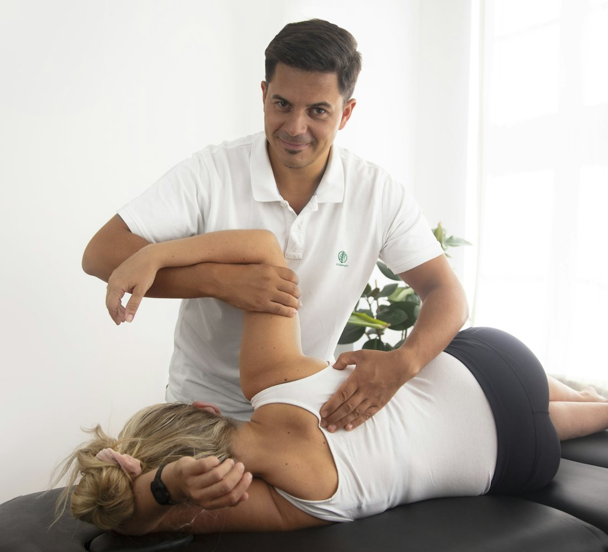
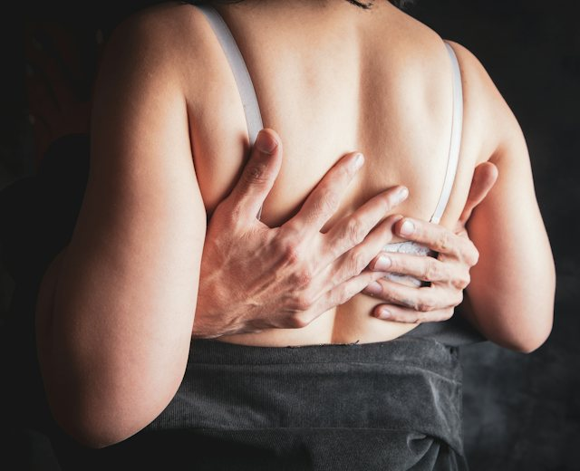
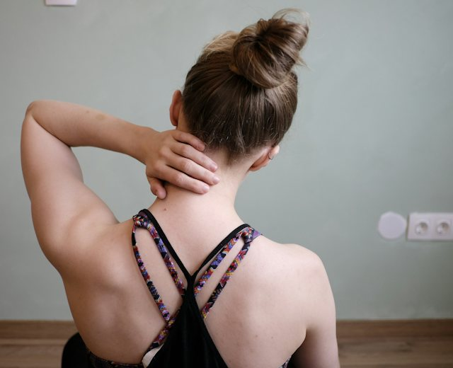
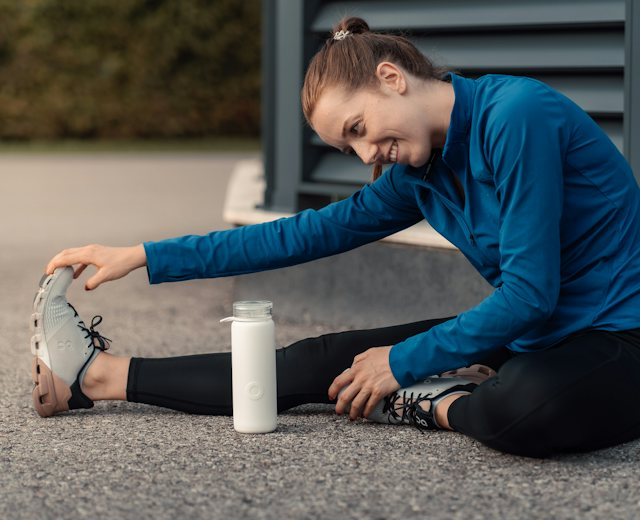
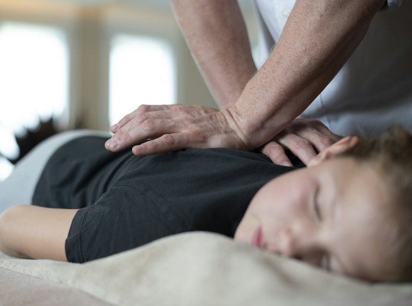
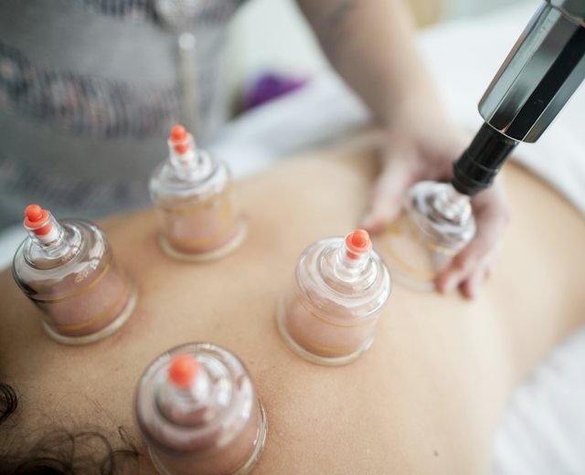
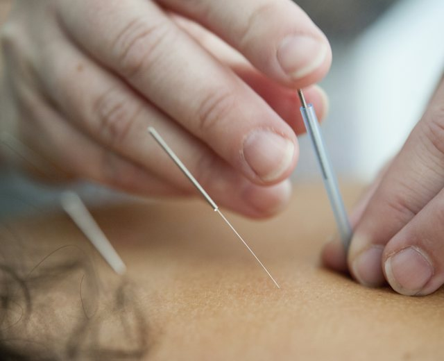
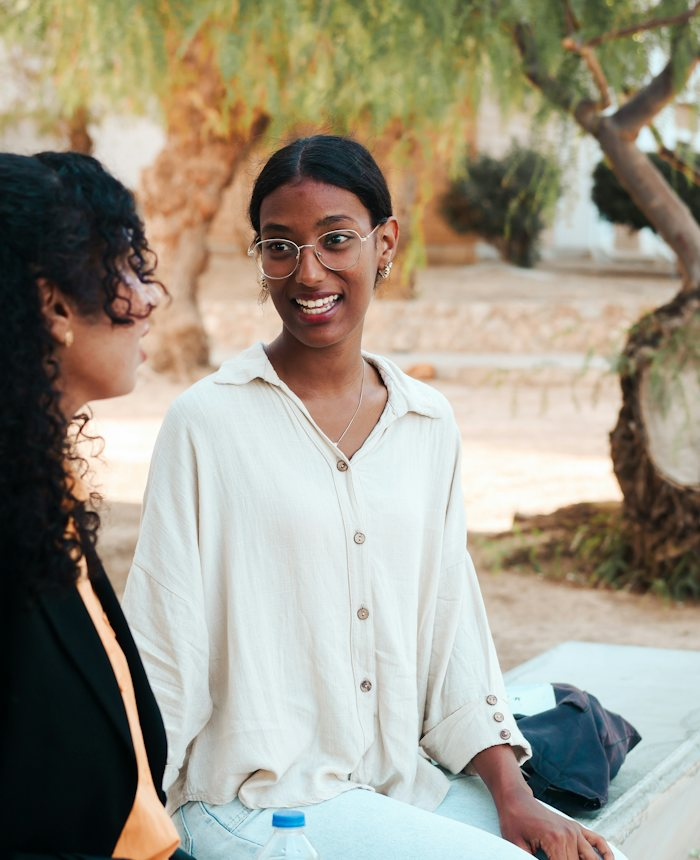

Seu corpo foi feito para se mover.Não para conviver com dor.
Quiropraxia em Baruericom avaliação antes de qualquer ajuste.
Cada atendimento começa ouvindo a sua história e entendendo a causa da dor. Só depois definimos o tratamento certo para o seu caso, com hora marcada e acompanhamento.

Do primeiro contato à altavocê sabe o que está sendo feito.
Muitos pacientes chegam com receio do ajuste. Por isso explicamos cada etapa antes de começar.
Avaliamos
Conversamos, entendemos sua rotina e fazemos uma avaliação completa para identificar as possíveis causas do desconforto.
Cuidamos
Explicamos o que foi identificado e iniciamos um tratamento personalizado, com as técnicas mais adequadas para o seu caso.
Acompanhamos
Orientamos sua recuperação e, quando necessário, planejamos as próximas etapas para você manter o conforto.
Não só no sintoma do dia.
Com hora marcada, sem pressa.
Ajuste, ventosa e Dry Needling quando indicado.
Cursos, formações e congressos.
Seu corpo pode estarpedindo uma avaliação.
Toque no que você sente e fale direto com a gente pelo WhatsApp. A mensagem já vai pronta.

Dor lombar
Dói ao ficar muito tempo sentado ou ao levantar da cama?

Pescoço e cervical
Rigidez no fim do dia ou ao acordar?
Nervo ciático
A dor desce pela perna ou vem com formigamento?
Má postura
Horas diante do computador sobrecarregam a coluna.
Dor de cabeça tensional
Começa no pescoço ou na nuca?

Limitação de movimento
Gestos simples começaram a incomodar?
Não achou o seu caso? Conte para a gente. A avaliação serve justamente para entender se a quiropraxia é indicada para você.
Tudo na mesma consultasem taxa extra.
- Avaliação completa antes de qualquer tratamento
- Ajuste de quiropraxia e ventosaterapia em toda sessão
- Dry Needling (agulhamento a seco) quando indicado, dentro da mesma consulta
- Compressa térmica quando necessário


Ventosaterapia
Dry Needling
Quem cuida de vocêouve antes de ajustar.
Ellen de Oliveira é quiropraxista e fundadora da Coluna Fluída. Desde criança sonhava em ajudar pessoas por meio das mãos, e encontrou na quiropraxia uma profissão que une ciência, movimento e qualidade de vida.
Atende em Barueri e Alphaville, com um plano de cuidado pensado para a necessidade de cada paciente.
Bacharel em Quiropraxia pela Universidade Anhembi Morumbi.
Cada paciente é único. A consulta começa pela sua história.
Ética, conhecimento e atendimento humanizado.
Voltar a trabalhar, dormir e treinarcom mais liberdade.
Recuperar o movimento é recuperar qualidade de vida. O primeiro passo é uma avaliação.
Agendar minha avaliaçãoQuem já passou por aquiconta como foi.
243 avaliações no Google Maps
“Valeu cada quilômetro! Saí de São Miguel, na Zona Leste, e fui até Barueri especificamente para fazer quiropraxia, e superou todas as minhas expectativas.”
Natalia Ferreira, avaliação no Google“Fui muito bem atendido, com bastante atenção, profissionalismo e cuidado. O atendimento foi muito bem explicado e me senti seguro durante a sessão.”
tiagoswd, avaliação no Google“Experiência incrível com o ótimo atendimento, local bem organizado e ideal para o procedimento. Super indico e não dói.”
Sinicleide Maria, avaliação no GoogleDúvidasantes de agendar.
O ajuste dói ou faz estalar?
O som que às vezes acontece é só a liberação de gás dentro da articulação, não é osso batendo. A maioria dos pacientes sente alívio, não dor. Tudo é explicado antes de começar e a técnica é adaptada ao seu caso.
Preciso vir várias vezes para sentir resultado?
Muitos pacientes notam melhora nas primeiras sessões, mas varia de pessoa para pessoa. Dores com mais de três meses costumam pedir acompanhamento maior, definido junto com você depois da avaliação.
Qualquer pessoa pode fazer quiropraxia?
A avaliação inicial serve para entender seu histórico e ver se a quiropraxia é indicada ou se você precisa de encaminhamento antes. Gestantes e idosos podem ser atendidos, com técnicas adaptadas.
Qual a diferença entre quiropraxia e massagem?
A massagem trabalha o músculo. A quiropraxia olha para a articulação e a coluna, buscando a causa da dor e não só o alívio momentâneo da tensão.
Só devo procurar quando estiver com dor?
Não precisa esperar. A quiropraxia também ajuda na prevenção, mantendo postura e mobilidade antes que um pequeno desconforto vire um problema maior.
Como chegarà Coluna Fluída.
- Endereço
- R. Jacó, 169, sala 1
Jardim São Pedro, Barueri - SP
CEP 06402-210 - Horário
- Segunda a sábado, das 8h30 às 20h
- (11) 96176-9922